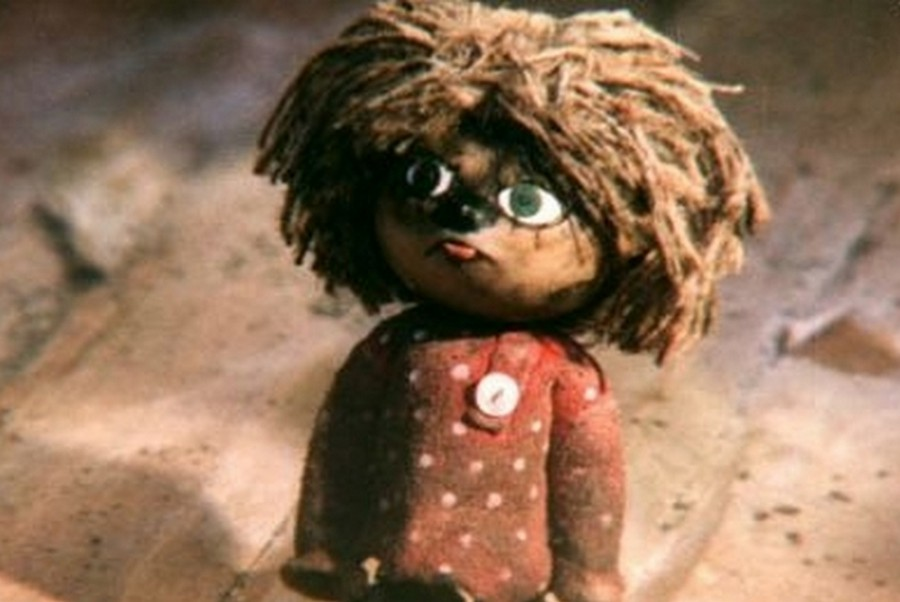

В основу сценария для первой серии мультфильма, «Дом для Кузьки», легла повесть-сказка Татьяны Александровой «Кузька в новой квартире», выпущенная издательством «Детская литература» в 1977 году (художники: Е. Чайко и М. Гран). Сказку Александрова начала писать осенью 1972 года в усадьбе художника Василия Поленова (там, где когда-то Сергей Прокофьев сочинил музыку к балету «Ромео и Джульетта»). За год до выхода сказки в книжном виде в газете «Неделя» был напечатан отрывок под названием «Кузька в новом доме».
" width="600" height="350"
Известна даже точная дата рождения персонажа — 8 октября 1972 года. Именно в этот день в усадьбе Поленово принято отмечать День рождения домовёнка Кузи[3]. Тогда же Александрова, которая по образованию была ещё и художником-мультипликатором (в своё время она окончила отделение мультипликации во ВГИКе), сделала и первые рисунки к книге, определившие во многом окончательный образ персонажей на экране. Но писательницу не допустили к иллюстрированию её первой книги, сославшись на то, что она не является членом Союза художников, и в итоге рисунки, вошедшие в книгу, оказались далёкими от тех образов, которые задумывала сама Александрова. Так как она скончалась 22 декабря 1983 года, остальные две части трилогии так и не были опубликованы.
Муж писательницы, поэт Валентин Берестов, тяжело переживал утрату, и после смерти жены поставил перед собой цель добиться опубликования всех частей повести. В это же время ему поступил заказ от студии «Мульттелефильм» (тогда подразделение творческого объединения «Экран») на создание сценария по мотивам уже вышедшей книги «Кузька в новой квартире». Берестов принялся за работу, и уже на следующий год мультфильм вышел на экраны и сразу же приобрёл огромную популярность.
Продолжение не заставило себя долго ждать, и в 1985 году вышла вторая серия «Приключения домовёнка», сценарий для которой был написан по мотивам ещё не опубликованных частей повести — «Кузька в лесу» и «Кузька у Бабы-Яги». Стараниями Берестова они всё-таки увидели свет в 1986 году. В этом же году вышла третья серия мультфильма — «Сказка для Наташи», а через год и последняя — «Возвращение домовёнка». Cюжетная линия этих последних трёх серий слабо пересекалась с оригинальным текстом.
Поскольку сама повесть, а особенно две последние её части являлись довольно своеобразными и напрямую отобразить их содержание на экране, не нарушая идеи первого мультфильма, было невозможно, то Марине Вишневецкой, которая была автором сценария последних трёх серий, пришлось писать сценарий для «Приключений домовёнка» практически с начала, а в основу последних двух серий вообще был положен оригинальный сценарий, в котором нет ничего общего с книгой. Изначально, при создании первой серии мультфильма, его продолжения не планировалось. Поэтому не были учтены некоторые сюжетные моменты книги, связывавшие первую часть повести с остальными, и в результате возникла хронологическая несостыковка, когда серия «Дом для Кузьки», вышедшая первой по времени, по сюжету оказалась всего лишь второй. Между тем первая часть оригинальной трилогии Татьяны Александровой заканчивается тем, что Кузька, освоившись в новой квартире, решил рассказать Наташе о своём прошлом, и всё, что идёт далее в последующих частях, — это его воспоминания (10-31 главы). В мультфильме же этот момент пропущен, так что зрители воспринимают данную непоследовательность как ляп. Тем не менее, по замыслу авторов, серии должны показываться именно в порядке развития сюжета, а не их создания, однако на практике это почти никогда не соблюдается.
| Тип мультфильма | Жанр | Режиссёр | Автор сценария | Студия | Длительность | Премьера |
|---|---|---|---|---|---|---|
| Кукольная мультипликация | Сказка | Аида Зябликова | Валентин Берестов, Марина Вишневецкая |
ТО «Экран» | 55 минут | 1984, 1985, 1986, 1987 |